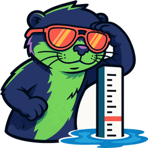
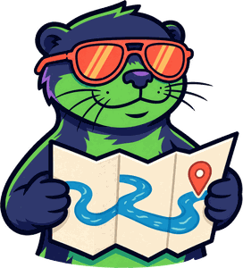
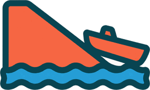
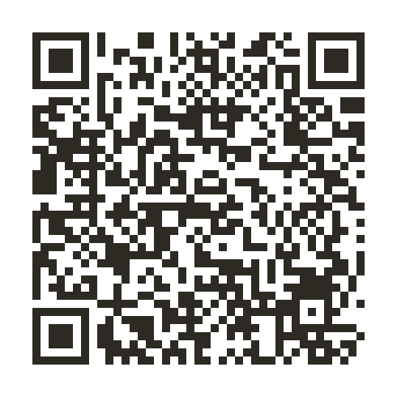

Check the water
Real-time gauge readings, a 14-day trend, and the weather about to change it.

 Eddy
Eddy
LIVE OZARKS RIVER CONDITIONS
Eddy reads the live USGS gauges on 24 Ozarks float rivers and turns the numbers into one honest rating — so you know what you are driving to before you load the boat.
ONE RATING, EVERY RIVER, UPDATED ALL DAY

Real-time gauge readings, a 14-day trend, and the weather about to change it.

Put-in to take-out: river miles, time on the water, and the shuttle drive.

Ramps, hazards, campgrounds and outfitters mapped along every stretch.


Free on the App Store — search Eddy River Guide. No iPhone? It all works at eddy.guide.